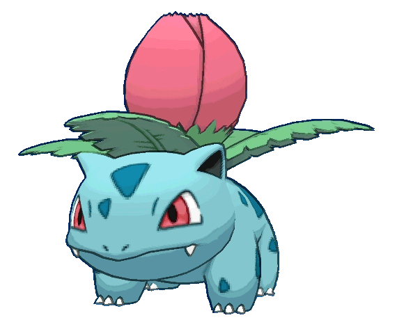

-
#01 - Bulbasaur
Seed Pokémon
Descrição
Bulbasaur (em Japonês: フシギダネ Fushigidane) é um Pokémon de dois tipos: Grass e Poison que foi introduzido na Geração I. Bulbasaur é um dos três Pokémon iniciais de Kanto, assim como Charmander e Squirtle, que podem ser escolhidos no começo de Pokémon Red, Green, Blue, FireRed, and LeafGreen. Ele evolui para Ivysaur no nível 16, que então evolui para Venusaur no nível 32. Ele também é o melhor Pokémon iniciante para uma playthrough de Kanto.
-
#02 - Ivysaur
Seed Pokémon
Descrição
Ivysaur (em Japonês: フシギソウ Fushigisou) é um Pokémon do tipo Planta e Venenoso introduzido na Geração I. É a evolução de Bulbasaur e evolui para Venosaur no levei 32.
-
#03 - Venusaur
Seed Pokémon
Descrição
Venusaur (em Japonês: フシギバナ Fushigibana) é um Pokémon do tipo grama e venenoso. Ele é a forma evoluída de Ivysaur quando chega no nível 32.
-
#04 - Charmander
Lizard Pokémon

Descrição
Charmander (em Japonês: ヒトカゲ Hitokage) é um pokémon do tipo Fogo introduzido na Primeira Geração. Ele, junto de Bulbassaur e Squirtle são os pokémon iniciais da região de Kanto. Charmander evolui para Charmeleon no level 16 e posteriormente evolui para Charizard no level 36.
-
#05 - Charmeleon
Flame Pokémon
Descrição
Charmeleon (em Japonês: リザード Lizardo) é um pokémon do tipo Fogo introduzido na Primeira Geração. É a evolução de Charmander quando chega no level 16 e evolui para Charizard no level 36.
-
#06 - Charizard
Flame Pokémon

Descrição
Charizard (em Japonês: リザードン Lizardon) é um Pokémon do tipo Fogo e Voador. Ele é a forma evoluída de Charmeleon quando chega no nível 36. Ele tambem é a forma final de Charmander.
-
#07 - Squirtle
Tiny Turtle Pokémon

Descrição
Squirtle (em Japonês ゼニガメ Zenigame) é um Pokémon do tipo Água. Squirtle é um dos três Pokémon iniciais de Kanto, assim como Bulbasaur e Charmander. Ele evolui para Wartortle no nível 16, que então evolui para Blastoise no nível 36.
-
#08 - Wartortle
Turtle Pokémon
Descrição
Wartortle (em Japonês: カメール Kameil) é uma espécie de Pokémon do tipo Água, apresentada na Geração 1 e classificada oficialmente como Turtle Pokémon. É a forma evoluída de Squirtle, um dos Pokémon iniciais entregues pelo Professor Carvalho em Kanto e evolui para Blastoise no level 36.
-
#09 - Blastoise
Shellfish Pokémon
Descrição
Blastoise (Japonês: カメックス Kamex) é uma espécie de Pokémon do tipo Água, introduzida na 1ª Geração e categorizada pela Pokédex como Shellfish Pokémon (Pokémon Marisco). É a forma evoluída de Wartortle e forma final de Squirtle, um dos Pokémon iniciais da região de Kanto. Blastoise tem a capacidade de Mega Evolução; quando exposto à Mega Stone Blastoisinite, assume sua forma Mega Blastoise. Na região de Galar, alguns indivíduos da espécie possuem o Fator Gigantamax, podendo ser transformados em Blastoise Gigantamax via Dynamax Band.
-
#25 - Pikachu
Mouse Pokémon

Descrição
Pikachu (em Japonês: ピカチュウ Pikachu) é um Pokémon tipo elétrico. Ele é a forma evoluida de Pichu quando chega num certo ponto de amizade com o treinador e evolui para Raichu quando esta segurando uma Thunder Stone.
-
#150 - Mewtwo
Genetic Pokémon

Descrição
Mewtwo (em Japonês: ミュウツー Mewtwo) é um Pokémon lendário do tipo Psiquico introduzido na primeira geração. Ele Mega Evolui para Mega Mewtwo X ou Y quando entra em contato com uma Mewtwonite X ou Y.